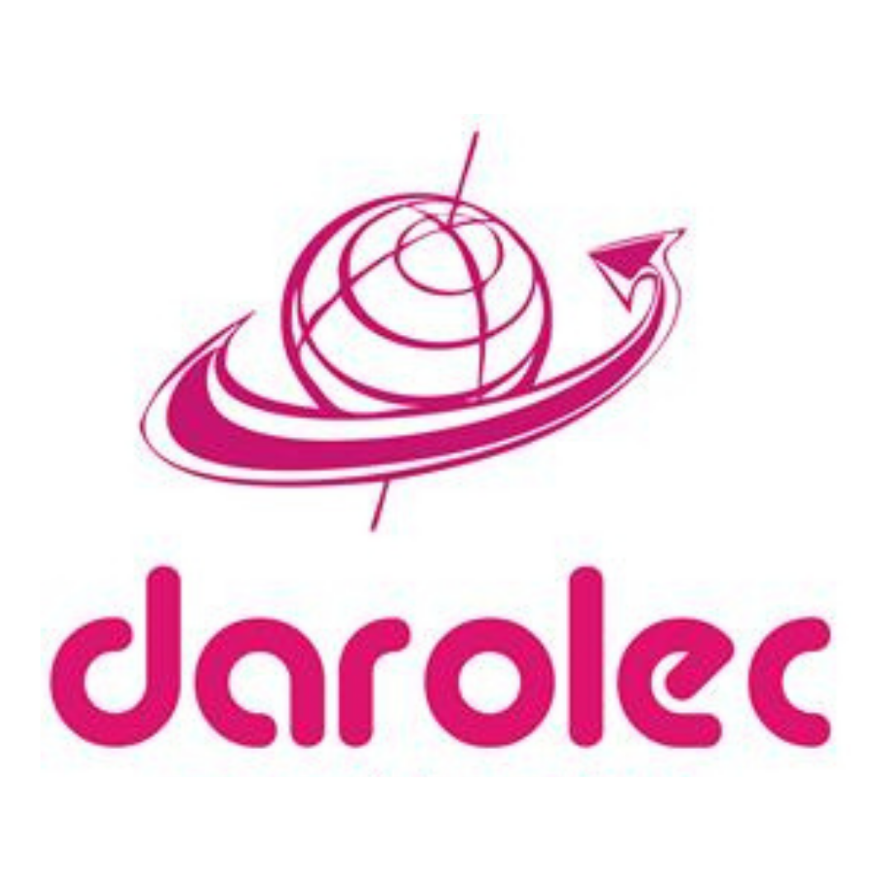

Página no encontrada
Lo sentimos, no pudimos encontrar la página que buscabas. Revisa la URL o regresa al inicio.


Lo sentimos, no pudimos encontrar la página que buscabas. Revisa la URL o regresa al inicio.
